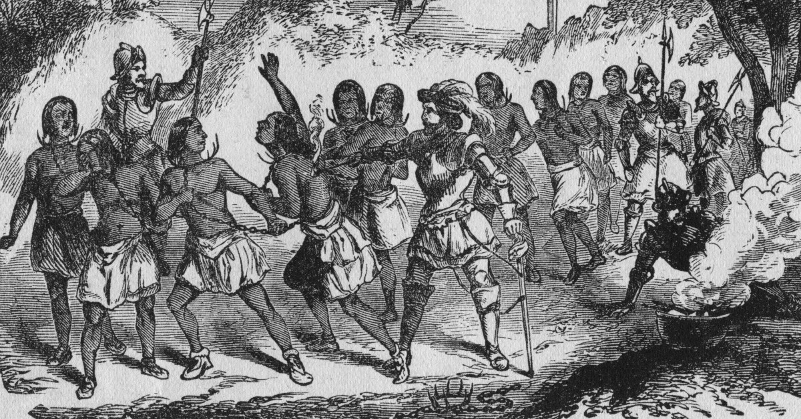
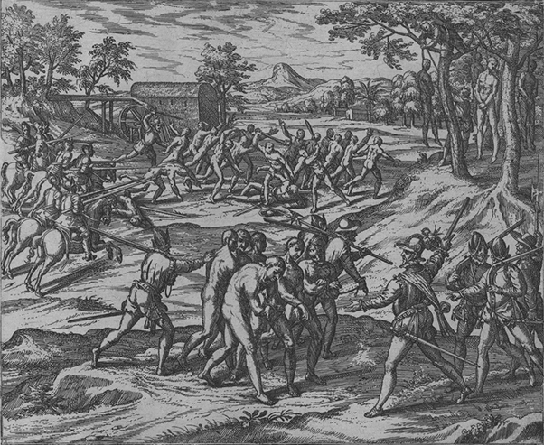
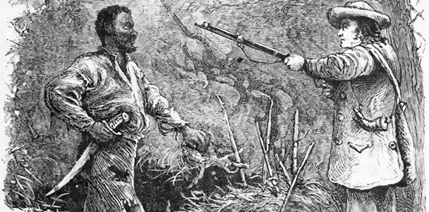
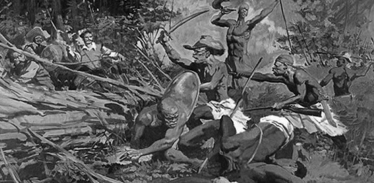

Comment attendre une transition, lorsque l'on est déjà forcé·e de quitter son foyer à cause de la désertification du Sahel ? Que l’on est expulsé·e de son logement par la construction d'un éco-quartier ? Que l’on se retrouve par la même occasion condamné·e à voir ses enfants grandir et jouer près des sites pollués ? L'écologie est une question de vie ou de mort, non pas pour demain ou pour après-demain, mais pour aujourd'hui.
Plutôt qu'une sacrée coïncidence ou une exception malheureuse, nous proposons de voir dans le lien intrinsèque entre le développement de l'écologie et l'histoire coloniale, la cause de l'effacement de tou·tes celleux qui luttent depuis des générations pour défendre leurs milieux de vie face aux logiques coloniales d'expropriation en Abya Yala (nom que les premières nations ont choisi pour désigner le continent dit « américain ») en Afrique, en Océanie, en Asie, mais aussi en Europe. Toutefois, là où le ravage submerge, des écologies conséquentes résistent. Ces réalités politiques sont souvent ignorées ou parfois fantasmées par l'écologie de la transition.
Si nous ne voulons pas reproduire le colonialisme et surtout ses conséquences (génocides, asservissement de masse et destruction de la planète)1 nous devons proposer des expériences collectives, des écologies, qui brisent les institutions qui fabriquent la colonialité. Il s'agit alors de déchaîner l'écologie de son héritage colonial, mais quel est cet héritage ? L'histoire de l'écologie commence avec la colonisation du continent américain amorcée en 1492. Jamais un tel système n'aura détruit avec tant de violence, et sur tous les continents, les différentes manières d'habiter la Terre pour n'en imposer qu'une seule : l' « habiter colonial ». Un habiter à la charge des habitants et au seul service des colons, un habiter de l'extractivisme2. Après avoir décimé les premières nations caribéennes par la maladie, les massacres et l'esclavagisme, les colons déportent et réduisent en esclavage 11 millions de femmes et hommes noirs entre le XVe et le XIXe siècle. L'exploitation des milieux, et notamment la destruction des forêts pour les transformer en plantations, est tellement intense que les premières politiques et pratiques de préservation sont mises en œuvre. C'est cela que Ernst Haeckel baptisera l'écologie3.
L’expansion d'un monde
De la nature sauvage aux réserves naturellesAu XVIIIe siècle, en Amérique du Nord, une nouvelle vision de la nature émerge chez les colons en réaction à son exploitation : celle d’une nature à protéger. Ainsi, en parallèle de l’expansion des lieux dégradés par l’industrialisation et la colonisation du continent, un réseau d'espaces naturels préservés pour leur qualité, leur beauté ou leur richesse biologique a été développé. Leur protection, assurée par un droit environnemental, fut mise en place et prise en charge par les États et les ONG.
Cette nouvelle vision de la nature, c'est celle de la wilderness, terme qui sert à désigner la nature préservée des actions humaines. La constitution des parcs naturels témoigne de l’imprégnation de l'idée de wilderness chez les premiers environnementalistes. Leur création en Abya Yala du Nord sert plusieurs exigences : celle de garder une « trace du passé » mythifiée, celle de se distinguer – le tourisme de parc était réservé aux riches – et celle d’alimenter un nationalisme américain qui se construit contre les premières nations. L'Abya Yala du Nord blanchie, orpheline de ses premières nations, devient alors la terre des colons : l'Amérique du Nord. La destruction de ces mondes passe par le contrôle de l'espace, mais aussi par l'imaginaire. L'imaginaire de la wilderness nie jusqu'à l'existence des relations des premières nations avec leurs territoires, fruits de co-évolutions millénaires, et réunit ces Abya Yala multiples sous un vocable unifiant et donc méprisant : le sauvage, qu'il s'agisse d'un milieu ou d'un humain.
La fabrique de la nature sauvage passe nécessairement par un blanchissement des mondes pour correspondre au projet de l'habiter colonial. Les espaces que les colons désignent comme sauvages sont blanchis de leur histoire avec celleux qu'ils appellent Indien·nes. En niant l'habiter des premières nations, les colons les assignent d'un même mouvement à la sauvagerie ; ce sont des peuples sans culture qui ne font pas partie de la civilisation.
Lors de la constitution des premiers parcs naturels dont Yellowstone, créé en 1872, les nations qui habitaient ces territoires sont expulsées et parquées dans des réserves créées par le gouvernement américain. Ces déplacements de populations s'intègrent dans un projet de cosmocide, c'est-à dire l'élimination non seulement d'une population (génocide) mais aussi de son univers physique (écocide), culturel (ethnocide) et symbolique. De nombreux massacres en témoignent, comme celui de la Piste des Larmes, entre 1831 et 1838, où 4000 Chahta, Tsalagi, Muscogee et Yat'siminoli furent décimé·es4.
La nature sauvage aujourd’huiLe concept de nature sauvage a pour principal inconvénient de désigner des milieux vivants socialement produits comme étant immaculés. Ce mythe virginal est encore présent aujourd’hui : les forêts tropicales qualifiées de forêts vierges sont en fait le résultat d’activités agroforestières plusieurs fois centenaires5. En ne reconnaissant pas ou en minimisant systématiquement l'héritage de certaines sociétés sur un territoire, les colons prétendent alors pouvoir se l'accaparer.
Dans les territoires colonisés, le concept de terra nullius (territoire n'appartenant à personne) est mobilisé par les colons selon deux modalités. D'un côté, il désigne des espaces qui peuvent être livrés à l'exploitation des humains et des milieux. D'un autre côté, ce concept désigne des espaces qui constituent pour les colons un Éden à protéger. Dans les deux cas, c’est l’occasion de déployer l’organisation étatique sur l’ensemble du globe, là même où des sociétés pensaient et s’organisaient différemment6. Le concept de terra nullius a permis d'étendre la privatisation des terres démarrée en Europe avec les enclosures au reste du monde7.
Aujourd'hui, afin de protéger les miettes d'un Éden fantasmé, des chercheur·es essayent de réhabiliter le concept de wilderness8, d'un retour au sauvage. Selon elleux, tous les espaces, et donc toutes les altérités vivantes, gagneraient à s’ensauvager afin de lutter contre la marchandisation du monde. Mais le pouvoir de désigner un espace comme sauvage est aussi celui de désigner comme telles les personnes qui s'y associent ou y sont associées dans un tout homogène et stéréotypé. Ainsi, ce courant de la « néo » wilderness donne l'impression de s'affranchir de sa matrice coloniale, mais la reproduit finalement. L'utilisation du terme « sauvage » assimile toujours un milieu habité à de la nature sauvage, et nie l'histoire de co-évolution d'un milieu vivant avec ses habitant·es. La « néo » wilderness, même si elle reconnaît dans la forme les crimes coloniaux, nie les rapports d’assignation et maintient le prisme colonial civilisé/sauvage, car elle est aveugle à la question politique de la réparation9.
Il ne devrait y avoir aucune assignation, ni à la civilisation, ni à la sauvagerie ; il s’agirait plutôt d’abolir ce schème de pensée dualiste. D'autres philosophies non-occidentales proposent déjà une diversité de relations d’attachement aux territoires qui ne sont vectrices ni du colonialisme, ni de génocides comme la wilderness. Les luttes pour l’autodétermination mettent en avant d’autres relations d’attachements à la terre, au travers du « raisonner avec le cœur » zapatiste, du buen-vivir (sumak kawsay en Kichwa) de Bolivie ou encore du sentir-penser des populations afro-descendantes colombiennes10. Ces relations qui sont aujourd'hui revendiquées politiquement par les peuples concernés n’émanent pas seulement d’Abya Yala Centrale et du Sud (Amérique Centrale et du Sud), mais de nombreuses autres régions, comme en Somalie et en Éthiopie avec le xeer issa11 ou de l'ubuntu des peuples Ntus12. Le mythe de la nature sauvage parle bien plus d’un monde né dans l'esprit des colons que des mondes qu’il croit pouvoir décrire comme un tout fantasmé. Cette histoire est donc celle des conquêtes et dominations coloniales, qui, bien qu’elles continuent de rencontrer d'incroyables résistances, ont su se maintenir durant plusieurs siècles jusqu’à aujourd’hui.
« Peut-être que nos façons de vivre étaient rudes et informes, acérées comme l’écorce de notre pays, mais c’étaient nos choix, et s’ils étaient si mauvais, comment aurions-nous survécu ces milliers d'années ? » - Mudrourou
Le maintien d’un monde
Après des siècles de luttes en Abya Yala, en Océanie, en Asie puis en Afrique, la dernière vague de décolonisation a finalement lieu dans les années 1950-1970. Malgré les indépendances, le système colonial a su perdurer à travers un ensemble très large de formes de contrôle politique et d’exploitation qui dégradent et transforment les relations qu'ont forgé les vivants à leurs milieux.
Aujourd'hui, le colonialisme persiste ainsi sous de nouvelles formes notamment au travers du développement durable imposé par les institutions internationales. C’est pour répondre aux enjeux écologiques que les institutions économiques et politiques dominantes consacrent le développement durable au Sommet de la Terre à Rio en 1992 : celui-ci devrait enfin résoudre les contradictions internes du capitalisme, en prenant en compte les populations et la Terre tout en maintenant l'exploitation. Une touche de vernis démocratique est apposée sur ce concept en invitant les populations autochtones à participer à la « co-gestion » des ressources naturelles et de leurs territoires. Bien sûr, pour cela, elles devront cesser d'habiter leurs milieux pour en devenir les gardiennes ou les guides touristiques, pendant que le cadre coercitif et infantilisant de l'idéologie du développement persistera.
Les écolonsUne véritable guerre est menée contre les mondes qui ne se plient pas aux volontés hégémoniques du développement durable et de sa prétendue écologie avec l'ouverture de fronts écologiques, processus d’appropriation des milieux vivants. Ils consistent à défaire les populations locales de leur milieu et de leur autonomie politique en constituant des espaces centrés sur la nature, comme les parcs naturels13. Ces fronts se forment ainsi autour d’espaces présentant un enjeu esthétique très fort et une valeur environnementale, réelle ou fantasmée, d’un territoire dont les éco-colons (écolons) souhaitent s'accaparer la gestion afin, par exemple, de développer des activités d'éco-tourisme14.
Les écolons mènent une bataille idéologique car il s’agit bien, par ce processus, de conquérir les esprits en persuadant les populations qu’ils sont les plus à même d’administrer ces espaces et ainsi de se les accaparer. Cette conquête se fait bien souvent en accusant les populations locales, soit de « bêtise » car elles seraient incapables de gérer leur territoire, soit d'être des ennemies qui exerceraient une trop forte pression sur les milieux. Dans ce dernier cas, le processus de gestion par les écolons peut également prendre un caractère ouvertement belliqueux. Le World Wild Fund (WWF) est ainsi accusé depuis 2014 par les Baka, de violation des droits de l'homme. C'est un euphémisme pour parler de spoliations de terres, tortures et assassinats perpétrés par les gardes du parc géré par l'ONG. Ce parc naturel, imposé par le WWF aux Baka, qui sont une population de chasseurs-collecteurs, leur interdit de chasser et de collecter au risque de leur vie. L'habiter Baka est tué « au nom de la biodiversité » alors qu'il forge l'équilibre dynamique des vivants sur le milieu15.
Cette intégration des logiques de front écologique, passant par la mise en parc et la rationalisation du vivant, s’inculque tôt. Les jeunes étudiant·es des pays occidentaux qui doivent valoriser leurs profils sont ainsi poussé·es à la réalisation de stages et de séjours humanitaires dans les anciennes colonies alors que cette forme d'activisme est ancrée dans un système d’exploitation. D’un côté, les entreprises extractivistes privent les populations locales de leurs moyens de subsistance, de l’autre elles organisent la paix sociale sur ces lieux en recourant, par le biais de fondations et d’organisations humanitaires, au maintien de conditions matérielles et sociales minimales. De plus, les missions de développement durable promues par des ONG, ont bien souvent fait des femmes une de leurs cibles principales. Un marketing de la « production féminine autochtone » s’est aussi développé autour de cet empowerment par le développement économique. Il s'agit alors de produire des cheffes, des entrepreneuses, des salariées moulées dans le capitalisme, et non d'encourager leur réelle autonomie16.
Le développement durable permet ainsi le maintien d’une organisation coloniale et de la gestion capitaliste du vivant, en plus de provoquer la disparition de certains milieux. Par exemple, en hiérarchisant les milieux vivants en fonction de leur rentabilité, via la notion de services écosystémiques, les milieux les moins rentables, comme les déserts, pourront être tranquillement liquidés. La logique de segmentation capitaliste du monde est absolue17 : tous nos rapports aux entités vivantes deviennent marchands, et donc marchandisables. Le développement durable tue durablement d’autres rapports au monde. Les fronts écologiques et les parcs ou réserves naturelles sont finalement des espaces de normalisation – c’est-à-dire de contrôle des populations humaines et non-humaines : contrôle social, contrôle de genre, contrôle de race. Ainsi, loin d'incarner un progrès, le développement durable menace et exploite constamment l'équilibre dynamique que les vivants entretiennent avec les milieux. Il est le ravage.
La négation verte : l'intérêt de changer de perspectiveLe ravage écologique n'est pas qu'un ravage pour les vivants, c'est aussi la destruction d'autres mondes. La société occidentale et capitaliste présente alternativement ces autres mondes comme des cultures à préserver pour leur diversité, leur richesse, ou à l'inverse comme des modes de vie sans intérêt et méprisables, car primitifs. Mais ces mondes ne se réduisent ni à un mode de vie, ni à une culture : ils constituent bien un ensemble de relations sociales et politiques qui fait monde18.
Pourtant, certains discours dits écologistes consistent en une négation de ces mondes. Après que le colonialisme a tenté de les pulvériser, ces écologistes souhaitent les transformer en marchandises dans une forme exotique séduisante pour les populations occidentales. Les courants New Age par exemple, qui se développent dans les années 1960, prétendent apporter une réponse aux crises écologiques en s'appropriant et en déformant des pratiques et savoirs venant en partie des mondes colonisés. Le New Age, puisant ses racines dans l'occultisme occidental, est composé de différents courants spirituels syncrétiques inspirés d'une vision fantasmée de l'Orient et plus largement des premières nations. Les principales figures de ces courants s'approprient et marchandisent ces spiritualités, proposant livres, stages et formations payantes aux Occidentaux·les. Ces processus de folklorisation commerciale des héritages s'inscrivent dans une longue histoire de pillage colonial et de mépris des autres cultures.
De la même manière, l'effacement progressif ou la recomposition de la culture ou de l'histoire des colonisé·es et de leurs descendant·es se joue aussi dans l'imaginaire des luttes écologistes, qu'elles soient anti-nucléaires ou paysannes. Elles constituent un véritable négationnisme vert car rares sont les imaginaires écologistes qui considèrent ces populations comme actrices des luttes écologiques. Par exemple, les Algérien·nes et Polynésien·nes, payent encore aujourd'hui le coût des essais nucléaires français qui eurent lieu entre 1960 et la fin des années 1990. Ces populations sont les premières victimes d'une véritable transition : celle du ravage colonial au ravage néocolonial. Malgré tout, cette histoire d'une résistance globale est absente de la pensée écologique. L'imaginaire colonial se perpétue dans les luttes écologiques alors même que celles-ci se donnent l'apparence de résister au colonialisme.
La lutte du Larzac est aussi révélatrice de ce processus d'invisibilisation ; on n'en retient que la victoire des stratégies de désobéissance civile non-violente. Pourtant, ce territoire est marqué par de nombreuses insurrections, mais ce n’est finalement qu’un petit groupe, le Mouvement pour une Alternative Non-violente et ses héritiers politiques qui ont fini par imposer leur récit de la lutte. Cependant, ce territoire a été forgé par une longue histoire de résistance au colonialisme, à la militarisation et au nucléaire : celle de la lutte des révolutionnaires algériens, puis celle des Harkis rapatriés et enfermés, jusqu'à ce que le camp du Larzac s'étende pour accueillir des ogives nucléaires19.
Cette réécriture de l'histoire de l'écologie participe à la négation du caractère écologique des luttes des colonisé·es et de leurs descendant·es. C'est un blanchissement de l'histoire qui n'est pas une dynamique passée, mais bien présente. Cette histoire est écrite sans la lutte des Antillais·es qui vivent sur une terre dévastée par des années de plantations bananières polluantes, au profit d'une caste héritière des esclavagistes. Sans celle des victimes d'essais nucléaires dans les anciennes colonies. Sans celle des communautés semi-nomades françaises qui cherchent à accéder à des lieux de vie à l'écart des sites pollués20 et celle des habitant·es des quartiers populaires surexposé·es à la pollution dans leurs emplois et leurs logements. Bref, c'est une histoire qui ne prend pas en compte les luttes de celleux qui se trouvent en première ligne face au ravage.
Pourtant, alors que d'un côté ces luttes sont ignorées par les écologistes, de l'autre elles sont réprimées par l’État et sa police. En effet, face à l'auto-organisation et aux insurrections des quartiers populaires et des personnes issues de l'immigration, les agents de la BAC (Brigade anti-criminalité) se présentent tels des cowboys qui partent à la reconquête « des territoires perdus » face aux « sauvages ». Il s’agit pour la police de réaffirmer un contrôle de l’espace contre ses habitant·es. Les quartiers populaires et d'immigration sont alors de véritables enclaves coloniales.
Au cœur de la bête monde
La discipline environnanteUne écologie sensible à la dignité de la vie des personnes déshumanisées par le colonialisme prend le contre-pied des discours qui manipulent aisément des imaginaires liés au propre et au sale et imposent un blanchissement des territoires. La whiteness s'appuie sur un héritage théorique et pratique de ce qu'on nommera hygiénisme.
La doctrine hygiéniste est apparue dans la deuxième moitié du XVIIIe siècle. Elle modifie drastiquement les pratiques urbaines et architecturales selon l'impératif de la préservation de l’hygiène et de la santé publique : les fortifications des villes sont démolies pour augmenter la circulation de l’air, les usines sont déplacées en périphérie puis les réseaux d’égouts, le traitement des eaux usées et le ramassage des déchets deviennent des services publics. Cette épuration s'étend aussi aux corps et aux populations21. Au corps entretenu, soigné, pratiquant des activités physiques de loisir et pensant son alimentation comme une pratique de bien-être est opposé l'autre : un corps dont on peut disposer à merci. Une véritable écologie des corps amène à considérer cet autre comme un individu pathogène à risque pour la société, cherchant par conséquent à le modeler ou à l'éloigner. L'hygiénisme se double d'un véritable racisme environnemental. C'est le constat que firent les militantes afro-américaines du mouvement de la justice environnementale pendant la seconde moitié du XXe siècle22.
Encore aujourd’hui, les usines dangereuses et polluantes, centres d’incinération, déchetteries, sont systématiquement installés à proximité des quartiers populaires et des terrains d’accueil pour les « gens du voyage ». De plus, les métiers exposés aux déchets sont majoritairement occupés par des personnes racisées. On a déjà vu que, loin de supprimer les nuisances, les éco-urbanistes les déplacent hors de la vue des populations blanches et privilégiées. Il s'agit d'aller au bout de la logique et de saisir la signification principale des écoquartiers : car si « le bruit et les odeurs » appellent à un nettoyage « au kärcher », les écoquartiers relèvent d'un hygiénisme moderne. Sous couvert de rénover, d'assainir un quartier populaire vétuste, on en expulse les communautés les plus précaires, par l'intervention policière et la hausse des prix. Les nouveaux habitants des écoquartiers, se plaignant des pratiques de leurs voisin·es mais pas de celles de la police, s'érigent en figures de contrôle, stigmatisant tout ce qui contrevient à leurs intérêts et participant au blanchissement de ces territoires.
L'état de crise révèle d'autant plus les injustices structurelles et l'hygiénisme poussés à leur paroxysme dans un contexte de vulnérabilité accrue des communautés marginalisées. Ainsi, début avril 2020, alors que le gouvernement et les associations appellent à une union nationale face à la pandémie de Covid-19, une répression exacerbée vise les habitant·es des quartiers populaires et d'immigration qui n'ont pas la possibilité de s'extraire de leur travail. Ainsi, le tiers des contraventions pendant le confinement de mars-avril 2020 a été infligé aux habitant·es de Seine-Saint-Denis, département où les institutions ont historiquement concentré les descendant·es des anciennes colonies. Associé à une brutalisation des populations non-blanches, c'est un véritable racket de masse et quotidien qui s'est intensifié.
Que ce soit dans la lutte contre le maintien ou l'extension d'activités polluantes à proximité des quartiers, ou dans l'organisation de la solidarité en période d'épidémie, la police et la justice apparaissent toujours comme des obstacles centraux, directs et omniprésents à la possibilité de s'organiser pour les populations des quartiers populaires. Dans ce contexte, l'écologie doit pouvoir penser l'abolition de la police23.
Les frontières : extension de l'hygiénisme à l'échelle internationaleL'éloignement des populations indésirables que nous venons de décrire trouve son apogée dans l'apartheid mondial maintenu par le système des frontières. Loin d'être des lignes géographiques rigides qui surgiraient naturellement, elles sont le produit des décisions politiques servant à établir une « écologie » des nations coloniales.
L'exemple le plus marquant de ce processus est sans doute la conférence de Berlin de 1884-1885, lors de laquelle le continent africain est arbitrairement divisé selon les intérêts des puissances coloniales. A cette occasion, Lord Salisbury, le premier ministre britannique à l'époque, affirme : « Nous avons entrepris de tracer des lignes sur les cartes de [régions] où l'homme blanc n'avait jamais mis les pieds. Nous nous sommes distribués des montagnes, des rivières, des lacs, à peine gênés par ce petit obstacle que nous ne savions jamais exactement où se trouvaient ces montagnes, ces rivières et ces lacs »24.
Contrairement aux frontières européennes, sans cesse redessinées par des guerres, les frontières africaines ont divisé des communautés historiquement liées en les éloignant de leurs territoires de rituels, de culture, de chasse et de pêche. Le fait d'instituer des frontières détruit des mondes à travers une rupture des pratiques écologiques, notamment celles des sociétés pastorales dont elles bloquent les transhumances, et bouleverse des équilibres entre communautés familières.
En imposant des frontières aux populations subalternes, les États post-coloniaux brisent la continuité de leurs relations à des territoires transfrontaliers, c'est-à-dire leurs manières d'habiter ces espaces, aussi bien que les milieux vivants émergeant de ces relations. C'est le cas de nombreux territoires aux frontières entre le Soudan du Sud, le Tchad et la République Centraficaine, où les frontières ont imposé de nouveaux itinéraires pastoraux. Sur ces territoires, les relations qui, historiquement se sont structurées autour de liens entre bétail et culture, sont devenues des motifs de nouveaux conflits.
Les frontières répartissent aussi le monde en espaces de vie et de mort : des zones deviennent lourdement militarisées, s'entourent de murs et de barbelés, de camps de rétention. Les chemins qui y mènent sont parsemés de corps, ceux des milliers de personnes exilées qui périssent chaque année en tentant de traverser les frontières.
Au cours du XXe siècle, les besoins économiques des États industrialisés, ainsi que les guerres et les génocides dans lesquels les anciennes puissances coloniales ont une très grosse part de responsabilité, forcent un nombre croissant de populations à chercher à se sauver ou à apporter un soutien à leurs communautés, en s'éloignant de leurs foyers familiaux et partant vers l'Europe.
Cependant, durant le parcours et une fois arrivées à destination, ces personnes subissent de plein fouet la violence hygiéniste qui ne fait que se renforcer depuis.
Les personnes exilées qui luttent pour le droit à vivre dignement sont confrontées aux fondements mêmes des structures gardiennes du ravage : la police, le système carcéral, les entreprises d'armement, de construction et de transport aérien bénéficiant de l'extension des frontières. Il est néanmoins difficile d'appuyer leur lutte sans connaître la situation qui la déclenche.
Une fois en Europe, les migrant·es les plus précaires sont exclu·es des services sanitaires, et leurs lieux de vie sont régulièrement démantelés. Connaissant l'histoire de l'hygiénisme, on sera peu surpris d'apprendre qu'elles se trouvent par la suite désignées comme étant les responsables des conditions de vie insalubres qui en résultent, comme sur la Jungle de Calais (qui était située sur un ancien site d’enfouissement de résidus industriels).
Expulsables à tous moments, les migrant·es sans-papiers deviennent une main-d’œuvre particulièrement flexible et sans protection sociale. Considérée trop impropre pour avoir des droits, elle est disciplinée par la répression, qui est incarnée notamment par la détention dans des centres de rétention administrative (CRA)25. Les conditions de vie y sont déplorables et la brutalité policière est incessante. Des sans-papiers résistent malgré les frontières communautaires et linguistiques en multipliant les grèves de la faim, en refusant d'obéir aux ordres de rentrer dans les cellules et même en incendiant les bâtiments lorsque tout autre moyen de lutte a démontré son insuffisance26.
Cependant, plutôt que de combattre cette « écologie de la déportation » en menant une critique sérieuse des frontières, beaucoup d'écologistes préfèrent encore défendre l'accueil des « bon·nes migrant·es » labellisé·es désormais réfugié·es climatiques.
Pourtant, les causes de l'exil et celles de la crise écologique ne sont-elles pas étroitement liées ? Dans la mesure où celles-ci sont les conséquences directes de l'exploitation des milieux et des humains, qu'il s'agisse de guerres liées à des ressources ou de l'absence de travail découlant des structures coloniales, hiérarchiser les causes des migrations c'est avoir une vision tronquée du ravage.
Le risque éco-fascisteLes États se sont déjà armés contre les exilé·es, mais certains acteurs assument de vouloir aller jusqu'au bout pour éliminer toute une partie de la population. Ils perçoivent les migrations et le métissage comme la cause d'un déclin d'une supposée « race blanche » et de sa civilisation. Ainsi, les auteurs de deux attentats perpétrés en 2019, à Christchurch (Nouvelle-Zélande) contre une mosquée et à El Paso (Texas, États-Unis) dans un supermarché fréquenté par la communauté mexicaine, se revendiquent explicitement d'une écologie xénophobe.
Ces passages à l'acte sont appuyés par une idéologie déjà présente dans les milieux écologiques : celle qui considère la question démographique comme l'une des principales causes de la crise écologique et qui estime qu'il faudrait que la population décroisse pour la régler. Or, ce sont bien souvent les populations en périphérie de la mondialisation qui sont accusées de menacer la civilisation occidentale dans une supposée invasion migratoire, d'une colonisation à l'envers et d'un grand remplacement des blancs. Face à cet Occident soi-disant menacé par les personnes exilées mais aussi par une idéologie qui leur est associée, le multiculturalisme, les adeptes du grand remplacement prônent une forme de décroissance passant par le retour à des valeurs d'ascétisme et de privation. L'extrême-droite se rue par ailleurs sur le thème du retour au local, y voyant l’occasion de rétablir une société extrêmement hiérarchisée, xénophobe et où les femmes seraient cantonnées à leur rôle de reproduction.
Alors que le ravage semble s’accélérer et que certain·es appréhendent un effondrement imminent des structures publiques, l'extrême-droite s'appuie sur le survivalisme et le localisme pour défendre la militarisation de la société. La vision post-apocalyptique qu'elle propage séduit toutefois une partie des naufragé·es des théories de l'effondrement. Pour organiser une auto-défense efficace face à un anéantissement radical des milieux vivants et s'émanciper des relations de domination, l'écologie gagnerait à puiser dans l'arsenal des luttes décoloniales et anti-fascistes.
 ---1. F. Fanon, Peau noire, masque blanc, Seuil, 1971.
2. M. Ferdinand, Une écologie décoloniale, Seuil, 2019.
3. R. Grove, Les îles du Paradis. L’invention de l’écologie aux colonies 1660-1854, La Découverte, 2013.
4. C. & R. Larrère, Penser et agir avec la nature, La Découverte, 2015.
5. C. Levis et al, « Persistent effects of pre-Columbian plant domestication on Amazonian forest composition », Science, 2017.
6. P. Clastres, La Société contre l’État, Editions de Minuit, 1974.
7. G. Monbiot, « The Tragedy of Enclosure », Scientific American, 1994.
8. V. Maris, La part sauvage du monde, Seuil, 2018.
9. Pour aller plus loin dans la critique de la néo-wilderness, voir le paragraphe « Le retour environnementaliste : poursuite du refus colonial du monde » p 323-329 de l’ouvrage de Malcom Ferdinand.
10. A. Escobar, Sentir-Penser avec la Terre, l’écologie au-delà de l’Occident, Seuil, 2019.
11. A. Moussa Iyé, « Le Xeer Issa : une contribution africaine à la construction du « pluriversalisme » », Présence africaine, 2018.
12. M. Ramose, « Ecology through ubuntu. » Emerging from Cultures and Religions of the ASEAN Region, 2009.
13. S. Guyot & F. Richard, « Les fronts écologiques : Une clef de lecture socio-territoriale des enjeux environnementaux », L’espace politique, 2009.
14. F. Hutchins, « Footprints in the Forest : Ecotourism and Altered Meanings in Ecuador’s Upper Amazon », The Journal of Latin American and Caribbean Anthropology, 2008.
15. L. Caramel, « Le WWF accusé de « violation des droits de l’homme » au Cameroun », Le Monde, 2017.
16. F. Vergès, Un féminisme décolonial, La Fabrique, 2019.
17. S. Sullivan, « Green Capitalism, and the cultural poverty of constructing nature as service provider », Radical Anthropology, 2009.
18. M. Gervais, « Le rural, espace d’émergence d’un paradigme militant décolonial », Mouvements, 2015.
19. M. Bernardot, « Être interné au Larzac », Politix, 2005.
20. W. Acker, « L’accueil des gens du voyage : processus de déshumanisation », Medium.com, 2019.
21. J-B. Fressoz, « Circonvenir les circumfusa », Revue d’histoire moderne contemporaine, 2009.
22. R.D. Bullard, Dumping in Dixie : Race, class, and environmental quality, Westview press, 2018.
23. Sur la centralité des luttes contre la violence policière lire la contribution d’A. Gay, « La crise d’une utopie blanche ? » dans Éloge des mauvaises herbes, 2018.
24. C. Roussy, « L’Union africaine face au défi des frontières : le cas de la frontière sénégalo-gambienne », Géoéconomie, 2015.
25. « Grève de la faim et répression au CRA de Vincennes », À bas les CRA, 04/02/2020.
26. Des sans-papiers, Feu au centre de rétention, Editions Libertalia, 2008.